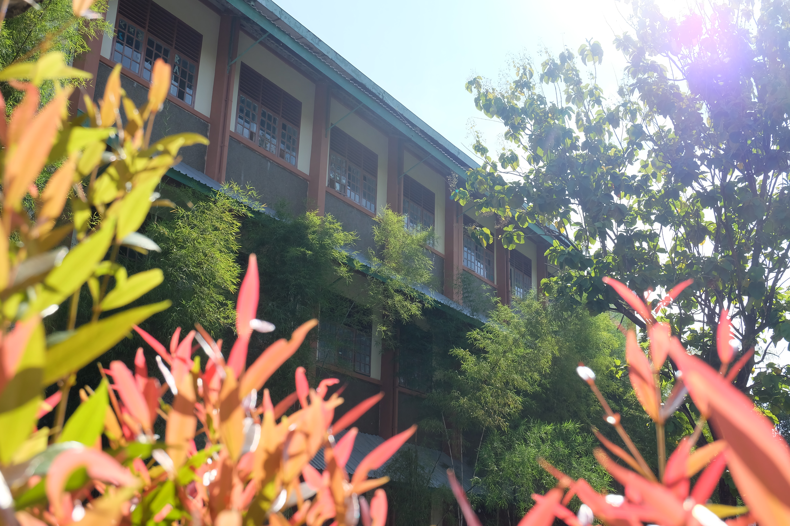
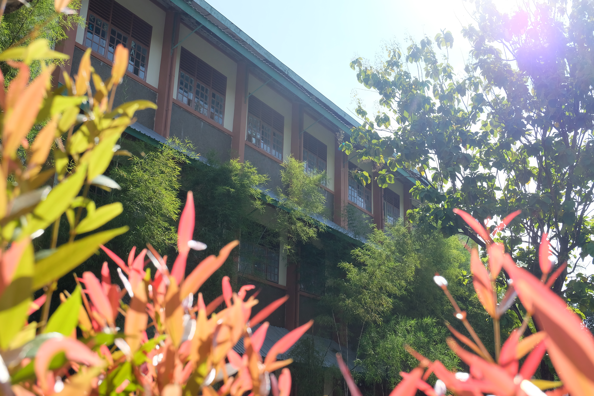

Selamat datang di website resmi
SMA Negeri 17 Makassar
SMA Negeri 17 Makassar mulai beroperasi pada bulan Januari 1992 atas prakarsa para tokoh pendidikan di Daerah Sulawesi Selatan, Kanwil Depdikbud yang mendapat dukungan sepenuhnya dari Pemda Tingkat I Sulawesi Selatan kerjasama dengan Pengurus Yayasan Latimojong berupaya untuk mendirikan sebuah sekolah unggulan di setiap daerah provinsi di seluruh Indonesia.


 
